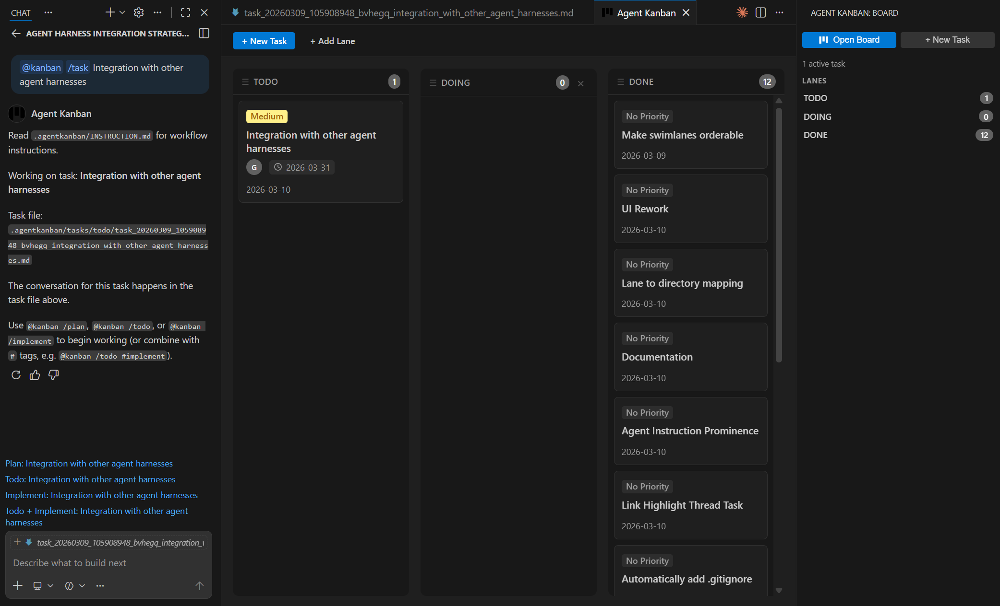

Introducing VS Code Agent Kanban: Task Management for the AI-Assisted Developer
VS Code Agent Kanban is available on VS Code Marketplace | GitHub
Note: VS Code Agent Kanban has had a major update since this post to add an optional Git worktree workflow (detailed here), automating the creation of worktrees from the task board or
@kanbanGitHub Copilot participant command. Updated documentation is available at github.com/appsoftwareltd/vscode-agent-kanban
Main Features
Agent Kanban has 4 main features:
- GitOps & team friendly kanban board integration inside VS Code
- Structured
plan/todo/implementvia@kanbancommands - Leverages your existing agent harness rather than trying to bundle a built in one
.mdtask format provides a permanent (editable) source of truth including considerations, decisions and actions, that is resistant to context rot
The VS Code Agent Kanban Board, Markdown file and GitHub Copilot Chat:

Youtube (Quick Demo) (Note that the image below shows the updated UI, the video needs an update but illustrates the workflow)
Background
There's a problem that anyone who regularly uses AI coding agents will recognise immediately: context rot.
You start a conversation with Copilot about a feature. You go deep - exploring approaches, debating trade-offs, building a shared understanding. Then a week later you come back to it, or you hit the context limit and clear chat, and that entire history is gone. You're starting over. Or worse, the next session drifts because the agent has no memory of the decisions already made.
Modern AI coding agents are powerful, but they operate without memory. Every chat session is a blank slate. This creates a real workflow tension:
- Context bloat - long-running tasks accumulate enormous context windows, slowing the LLM and increasing the chance of the agent losing track of earlier constraints.
- No persistent task history - decisions, plans, and rationale disappear when you clear chat or close VS Code.
- No structure - tasks live only in your head or in separate todo apps, disconnected from the code and the agent workflow.
- Team coordination - there's no shared view of what the AI is working on, what's been decided, or what's in flight.
The traditional fix is to paste context back in manually, write notes elsewhere, or use a project management tool that lives entirely outside the IDE. None of these feel right for an agent-first workflow.
Agent Kanban is a VS Code extension that solves these problems via a markdown formatted task record, and a clear plan / todo / implement flow.
Markdown Files as the Source of Truth
Agent Kanban takes a deliberately simple approach: every task is a Markdown file.
Each task lives in a .agentkanban/tasks/ folder as a .md file with YAML frontmatter. The frontmatter tracks the task title, which Kanban lane it's in, and timestamps. The body of the file is a structured conversation log, using [user] and [agent] markers.
---
title: Implement OAuth2
lane: doing
created: 2026-03-08T10:00:00.000Z
updated: 2026-03-08T14:30:00.000Z
description: OAuth2 integration for the API
Conversation
user
Let's plan the OAuth2 implementation. We need to support both device code and client credentials flows.
(User types 'plan' in the chat window)
agent
Here's my analysis of the two OAuth2 approaches for your API...
user
Make changes here, here and here
(User types 'plan' in the chat window)
agent
Here's my updated plan ...
(User types 'todo' in the chat window, agent creates todos, User types 'implement' when ready for the agent to start work)
This is intentionally boring and readable. No proprietary formats, no databases, no opaque state. Just text files you can open, edit, search, and commit.
By having the user confirm readiness in GitHub copilot chat, the robust built in agent harness can start work, with all of the features and capabilities that come with it. This is a key design decision - early testing with a custom harness proved to have limitations while working within the context of a VS Code integrated extension.
GitOps Friendly by Design
The entire .agentkanban/ folder is designed to be committed to version control (if you choose to). This gives you a few things for free:
Permanent task history. Every decision, plan, and implementation conversation is preserved in your repository. Future developers (and future you) can see not just what was built but why, in the actual words of the planning conversation.
Diffable, mergeable state. One file per task, board config in YAML - these are standard text files. They diff and merge naturally. No merge conflicts from opaque binary state. No sync issues between team members.
Shared team context. When you commit task files, your whole team gets visibility into what the AI is working on, what's been decided, and what the current state of any feature is. Pull the latest and open the board - you're immediately up to date.
Audit trail. In regulated or enterprise environments, having a git-tracked record of the planning and decision-making process for AI-assisted development is increasingly valuable.
Works With Your Existing Tooling - Intentionally
This is probably the most important design decision in Agent Kanban: it doesn't try to bundle its own agent harness.
There's a temptation in tools like this to go full vertical integration - custom LLM loop, custom model selection, custom tool calling. Agent Kanban explicitly avoids this. It works with GitHub Copilot Chat and Copilot's native agent mode. That means:
- Copilot's tool calling works exactly as you'd expect
- Diff previews, terminal commands, and file edits all use Copilot's native UI
- You keep your existing Copilot subscription and workflow
- You don't learn a new LLM interface
The extension contributes a @kanban chat participant. When you run @kanban /task My Feature, it opens the task file, injects the appropriate context, and drops you into a standard Copilot agent session. Everything from that point is just Copilot - Agent Kanban has done its job.
This also means Agent Kanban doesn't interfere with your other agent configuration. Your AGENTS.md, CLAUDE.md, skills, and custom instructions all continue to work exactly as before. The extension manages its own INSTRUCTION.md separately, so there's no collision.
The Plan → Todo → Implement Workflow
Once you've selected a task with @kanban /task, you drive the agent with simple verbs in Copilot agent mode:
plan- The agent reads the task file and writes a structured plan back into it. You can steer this with additional context:plan focus on error handlingorplan assume we're already using Prisma.todo- Generates a checkbox TODO list from the plan, written into a companiontodo_*.mdfile. Checkboxes you can actually tick off.implement- The agent works through the plan and TODOs, making code changes using Copilot's built-in tooling.
You can chain them: todo implement will generate TODOs and then immediately start implementing. The task file accumulates the full conversation as the work progresses, so you always have the record.
When work stalls or context gets unwieldy, you clear chat and come back. @kanban /task again, and you're restored to exactly where you were - the task file has everything.
The Kanban Board
The visual board in the VS Code Activity Bar gives you a bird's-eye view of all tasks. Default lanes are Todo, Doing, and Done - but lanes are configurable in board.yaml.
Tasks are created with @kanban /new My Task or with the + New Task button on the board. Drag cards between lanes as work progresses. Tasks in the Done lane are excluded from /task selection, which keeps the active task list clean.
The board is deliberately minimal. It's not trying to replace your project management tool for sprint planning and stakeholder reporting. It's a lightweight layer that gives the developer visibility into what the agent is doing, right inside the IDE where the work is happening.
Getting Started
- Install Agent Kanban from the VS Code Marketplace
- Click the Kanban icon in the Activity Bar
- Create your first task:
@kanban /new My Featurein Copilot Chat - Select it:
@kanban /task My Feature(task name is matched on fuzzy search) - In Copilot agent mode, type
plan
The extension handles the rest - creating the task file, injecting instructions, keeping the board in sync.
Conclusion
The rise of AI coding agents is forcing a rethink of how developers manage work. The planning, the decisions, the back-and-forth with the agent - these are part of the work now, and they deserve to be first-class, persistent, and version-controlled. Markdown is a format that both humans and agents can work in, and this tool aims to leverage that.
Agent Kanban is a small, focused tool that respects that shift without overcomplicating it. Plain Markdown, committed to Git, integrated with the tools you already use.
Agent Kanban is available on the VS Code Marketplace. Source is available on GitHub.